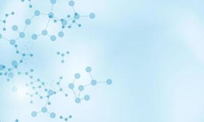
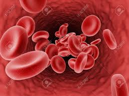
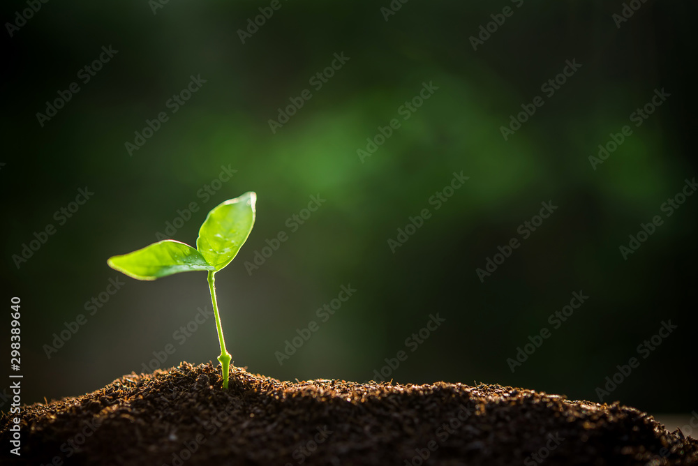
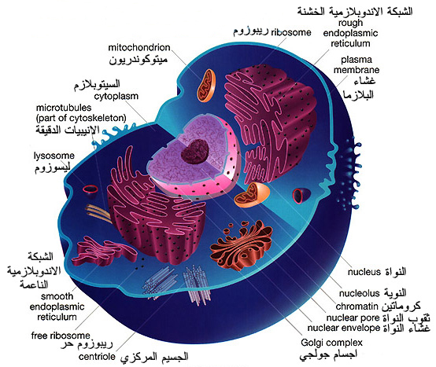

تنقسم الي
النقل
هي عملية نقل المواد الغذائية من مكان لاخر و تتم في الحيوان عن طريق الدم

التغذية و الهضم
يستفيد الحيوان و النبات بهذه العملية

التنفس
هي عملية تحويل الطعام الي طاقة داخل الجسم و تتم في الميتوكوندريا داخل الخلية في الكائن الحي

انواعها
*ذاتية* مثل النبات و بعض البكتريا
H2O + CO2 -->> C6H12O6
غير ذاتية
التعريف
دراسة الغذاء بطريقة علمية
دراسة طرق تغذية الكائنات الحية
اهميتها
النمو
تعويض التالف
الحصول علي الطاقة